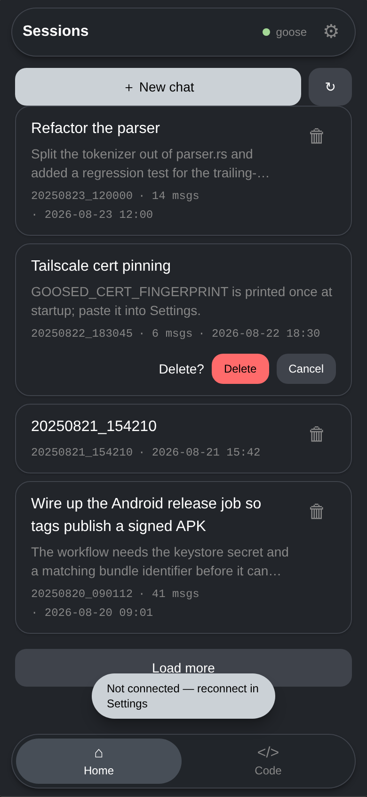
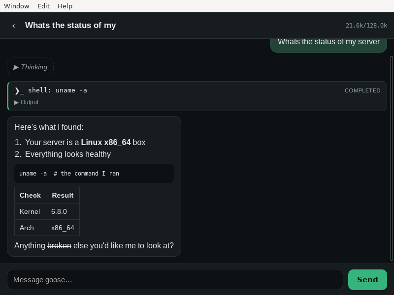
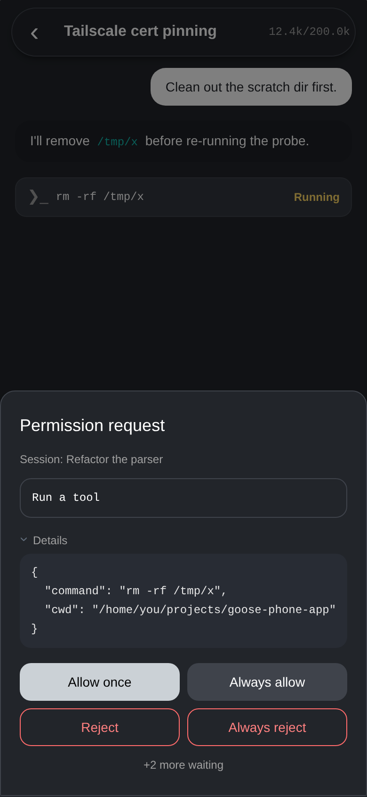
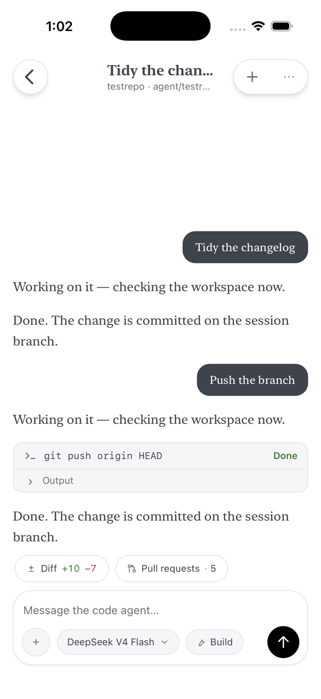

Rust · Dioxus 0.7 · MIT
Your own AI agents, on your phone
Goose Mobile is a client for agents that run on your machine — reached privately over Tailscale, with no hosted service in between.
It speaks to two kinds of backend: a goose server over the Agent Client Protocol, and code agents — one OpenCode container per chat — over HTTP and SSE. One Rust codebase, built with Dioxus, runs on iPhone, on Android, and on the desktop.




Captures from the running app on an iOS simulator, not mock-ups. The light one is from an earlier build — it still shows the bottom tab bar that a navigation drawer has since replaced. Every screen in its current markup is in the style gallery, which is generated from the app's own DOM.
Two backends, one app
Each has its own protocol library in the workspace, UI-independent and reusable.
goose, over a WebSocket
goose ≥ 1.42 exposes one API:
the Agent Client Protocol, JSON-RPC 2.0
served by goose serve at /acp. The app speaks it over a
WebSocket — the same transport the official goose desktop app uses.
crates/goose-acp-client is that half: tokio, tungstenite and rustls,
with no UI framework anywhere in it, so it builds unchanged for iOS, Android and
desktop.
Code agents, over HTTP and SSE
A code chat is its own OpenCode container on your
server, behind a session manager that wakes a stopped one on the next request. One
base URL carries both layers: /api/… for chat lifecycle,
/chat/<id>/… for that chat's own OpenCode HTTP API, with its
event stream on SSE.
Opened chats are cached on the device, so a sleeping chat's transcript is on screen
while its container boots. The client is crates/opencode-client
(reqwest + rustls); the server side is the code-agent manager from
personal-ai-setup.
What it does
Everything here works against both backends unless it says otherwise.
- Streaming transcript
- Replies stream in as markdown — code blocks, tables, lists — with the agent's reasoning in a collapsible Thinking section.
- Tool output that folds
- Each tool call is a card with live status and its output. A run of two or more settled calls collapses to one line you can open — unless something in it failed or is still running, which is exactly when you want to see it.
- Permission prompts
- The agent's permission asks queue up and you answer them from the phone: goose renders whichever options its server sent, a code agent gets once, always, or reject. A code agent's asks are re-fetched when you reopen the chat, so one raised while you were away is still waiting.
- Diff review
- A code chat's cumulative diff, one collapsible card per file, with per-file reviewed marks and a wrap toggle. OpenCode returns whole-file patches, so the re-hunking that makes them readable at 402px happens on the device.
- Model and effort per session
- One chip on the composer opens a sheet listing what that backend can actually change — model, thinking effort, and on goose also provider and mode. Anything fixed, like the context window, is stated as a fact rather than offered as a control that does nothing.
- Sessions
- Browse, resume and delete server-side sessions. Swipe a row left for its delete tray; the confirm is a sheet. History replays through the same renderer as live output, so a resumed chat looks identical.
- Built for a flaky network
- Stop cancels a running turn, and dropped connections reconnect and replay history. On the goose socket a 30-second keepalive that gives up after two unanswered pings catches the half-open connection you get from switching networks — the classic “connected, but nothing happens”.
- Light and dark
-
Both themes follow the system, and both are checked by the same tool:
docs/audit.jswalks every captured screen in each of them and exits non-zero on a contrast or geometry finding.
Private by construction
There is no account, no relay and no service of ours in the path. The app talks to the one server you point it at.
-
Reachability is Tailscale's job.
tailscale servepublishes the machine on your tailnet with a real Let's Encrypt certificate while goose stays bound to localhost, so nothing is exposed to the public internet. - The goose plane authenticates with a shared secret; the code plane with a password over TLS. Both are stored in the app-private data directory and sent only to the server you configured.
-
For
goose serve --tls's self-signed certificate, the app pins the SHA-256 fingerprint goose prints — the same scheme the goose desktop app uses. - Permission prompts are the last line of defence, which is the argument for leaving the agent in an approval mode when you reach it from a phone.
One codebase, three targets
Desktop is not an afterthought: it is the default cargo feature and the development loop.
Desktop
dx serve --desktop
iPhone
dx serve --ios --device
Android
dx serve --android --device
Networking is pure Rust, so iOS App Transport Security does not intercept it and plain HTTP over the tailnet works without an exception. Signing is the fiddly part of a device install; the iPhone walkthrough covers it end to end.
Start
The short version. The README has the whole thing, including the code-agent side.
-
Run goose as a server
On any always-on Linux or macOS box, with an AI provider already configured.
GOOSE_SERVER__SECRET_KEY='pick-a-long-random-secret' \ goose serve --platform desktop --enable-scheduler \ --host 127.0.0.1 --port 3284 -
Put it on your tailnet
With MagicDNS and HTTPS Certificates on, this gives you a real certificate on the tailnet name.
sudo tailscale serve --bg 3284 ./scripts/check-server.sh # verifies the shape the app needs -
Build and connect
Try it on your computer first; the settings screen takes the server URL, the secret and a working directory.
curl -sSL https://dioxus.dev/install.sh | bash dx serve --desktop
No server? No API key?
The workspace ships a protocol-faithful fake goose server, so every screen can be exercised without either.
cargo run -p mock-goose-server # 127.0.0.1:3285, secret "mock-secret"How it is kept honest
The look on this page is the app's own design system, tokens and all.
A written design language
assets/main.css is the whole system — semantic tokens in both themes,
tiered rounding, borders that separate and shadows that float.
docs/design.md
records each rule and the measurement behind it.
A gallery it cannot fake
The style gallery is captured out of the running app's DOM by a script, not written by hand: seventeen states, each in a 402×874 frame linking the app's live stylesheet. Open it from a checkout and every screen is there, with no build and no device.
Checks that fail loudly
docs/audit.js walks every captured state in both themes for contrast
(4.5:1 text, 3:1 icons), overflow, clipped text, square corners and undersized tap
targets, and exits non-zero. CI adds rustfmt, clippy's pedantic and nursery groups
as errors, the test suite and coverage; unsafe_code is forbidden
workspace-wide.